Kolkata (Calcutta)
Victoria Memorial
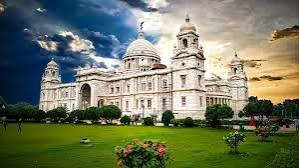
Iconic marble building with museum and gardens.
Howrah Bridge
Historic cantilever bridge over the Hooghly River.
Dakshineswar Kali Temple
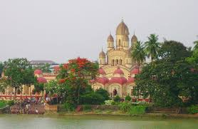
Hindu temple dedicated to Goddess Kali.
Belur Math
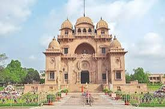
Headquarters of the Ramakrishna Math and Mission.
Indian Museum
Oldest and largest museum in India.
Sundarbans National Park
Sundarbans National Park
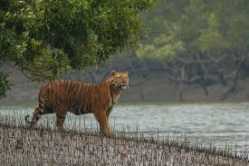
UNESCO World Heritage Site, mangrove forest and Bengal tiger habitat.
Sundarbans Tiger Reserve
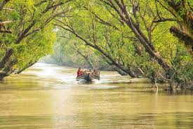
Wildlife sanctuary for Bengal tigers, crocodiles, and birdwatching.
Darjeeling
Tiger Hill
Viewpoint for sunrise over Mount Kanchenjunga.
Darjeeling Himalayan Railway (Toy Train)
UNESCO World Heritage narrow-gauge railway.
Padmaja Naidu Himalayan Zoological Park
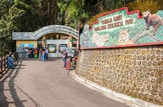
Zoo specializing in Himalayan wildlife, including snow leopards.
Kalimpong
Durpin Monastery
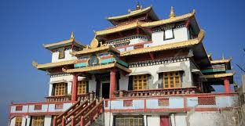
Tibetan Buddhist monastery with panoramic views.
Deolo Hill
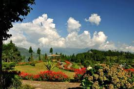
Hilltop park with gardens and views of the Himalayas.
Dooars
Gorumara National Park
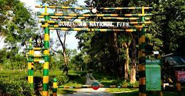
Wildlife sanctuary with elephants, Indian rhinos, and birdwatching.
Jaldapara National Park
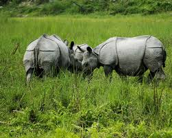
Wildlife sanctuary with Bengal tigers, elephants, and one-horned rhinos.
Murshidabad
Hazarduari Palace
Palace with a thousand doors, now a museum.
Shantiniketan
Visva-Bharati University
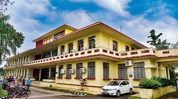
University founded by Rabindranath Tagore.
Kala Bhavana
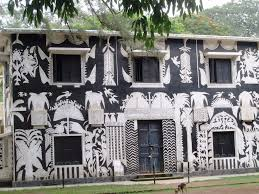
Art college within Visva-Bharati known for its art education.
Bishnupur
Bishnupur Temples
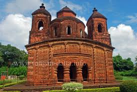
Terracotta temples dating back to the Malla dynasty.
Rasmancha
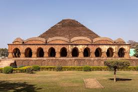
Historic temple used for Ras festival celebrations.
Other Attractions
Bakkhali
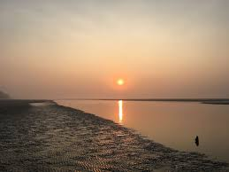
Beach town with scenic views and fishing villages.
Chandannagar
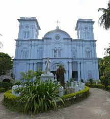
Former French colony with colonial architecture and Durga Puja celebrations.
Festivals and Cultural Events
Durga Puja
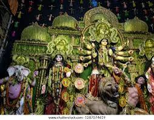
Major Hindu festival celebrating Goddess Durga, especially grand in Kolkata.
Kolkata International Film Festival
Annual film festival showcasing international and Indian cinema.
Adventure and Nature Activities
Trekking in Darjeeling and Kalimpong
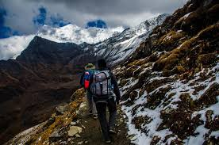
Opportunities for trekking in the Himalayan foothills.
River Rafting in Teesta River
Adventure sport in the Teesta River's rapids.